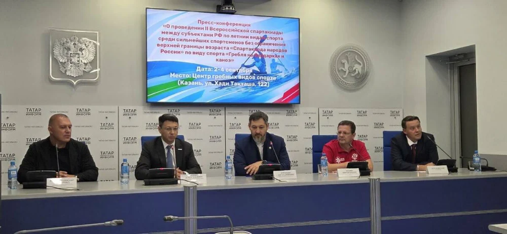
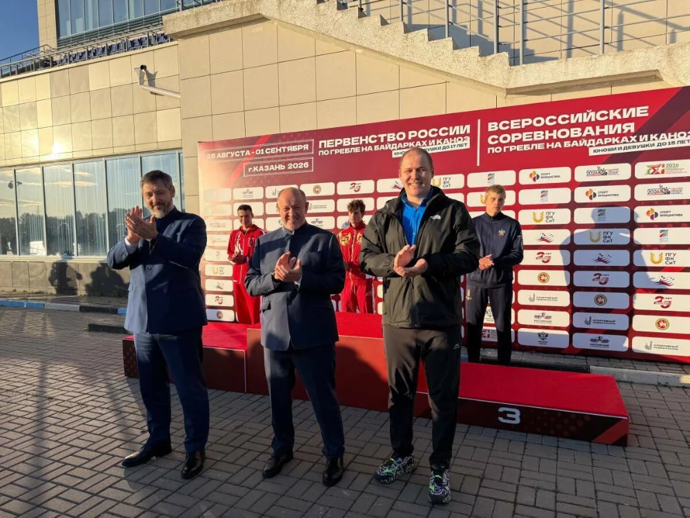
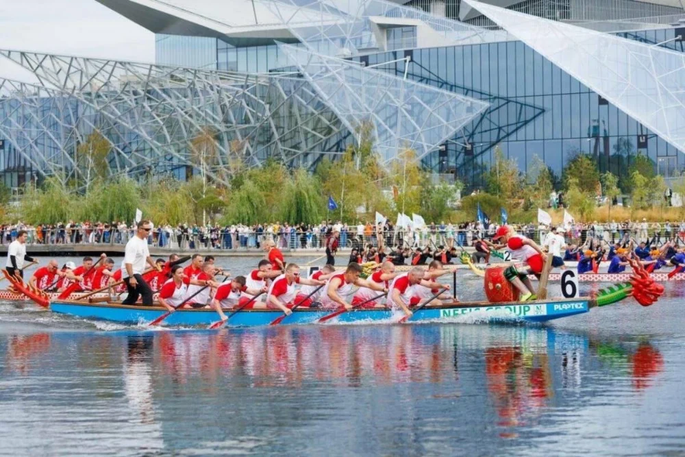

Байдарка
Скорость, ритм, точность каждого движения.
K–1 / K–2 / K–4От первого гребка на Кабане до финишного рывка. Люди, старты и места, где растёт гребля Татарстана.
В одиночку и экипажем. На длинной дистанции и в коротком спринте. В гребле каждый найдёт свой темп.
Скорость, ритм, точность каждого движения.
K–1 / K–2 / K–4Сила, баланс и контроль на каждом метре.
C–1 / C–2 / C–4Единый темп, общая цель, командный характер.
КОМАНДНАЯ ГРЕБЛЯКалендарь соревнований по сезонам и дисциплинам. В карточках стартов — подробности, источники и протоколы.
Старты, победы, важные события — всё, чем живёт гребля в Татарстане. Публикации ведут к первоисточникам.
На старт в Центре гребных видов спорта вышли около 190 спортсменов из 21 региона России. В программе — дистанции 200, 500 и 1000 метров.
Читать в «Татар-информ»
ФОТО ПЕРВОИСТОЧНИКА Иван Жуков / Татар-информОрганизаторы рассказали о предстоящих стартах 2–4 сентября и участниках соревнований.
Читать в «Татар-информ»
ФОТО ПЕРВОИСТОЧНИКА Пресс-служба Минпромторга РТ / Татар-информ30 августа в Казани состоялись финалы на дистанции 200 метров. Олег Коробченко принял участие в церемонии награждения.
Читать в «Татар-информ» ФОТО ПЕРВОИСТОЧНИКА
https://protatarstan.ru/images/uploads/news/2026/7/23/026c1254d2bba7c9dcfa8fc49838a267.png
ФОТО ПЕРВОИСТОЧНИКА
https://protatarstan.ru/images/uploads/news/2026/7/23/026c1254d2bba7c9dcfa8fc49838a267.png
16 августа в Казани вновь пройдут красочные гонки на лодках «Дракон». Мероприятие состоится в рамках Международного форума «РОСТКИ: Россия и Китай – взаимовыгодное сотрудничество» и обещает собрать тысячи зрителей. Уже заявились 16 команд от предприятий и министерств Татарстана.
Читать в «Татарстан»
ФОТО ПЕРВОИСТОЧНИКА Федерация гребли на байдарках и каноэ / Татар-информРазговор с исполнительным директором региональной федерации о тренировках, базе на Кабане и развитии спорта.
Читать в «Татар-информ»В Казани есть где выйти на воду. Собрали площадки, о которых известно из открытых источников. Набор и расписание уточняйте напрямую.
 Зимняя подготовка
КАЗАНЬ / РТ
Зимняя подготовка
КАЗАНЬ / РТ
Тренировочная инфраструктура для занятий на воде и в помещении. Уточняйте условия набора непосредственно у спортивной школы.
 На воде
КАЗАНЬ / РТ
На воде
КАЗАНЬ / РТ
Летняя база для тренировок по гребле на байдарках и каноэ, а также на лодках «Дракон».
В открытых публикациях сообщалось о планах открыть новые отделения в Набережных Челнах, Заинске и Нижнекамске — это планы, не подтверждённые действующие секции.
Читать источникКалендари, регламенты и документы. То, что должно находиться за пару кликов, а не за десятком запросов.
За каждой победой — спортсмены, тренеры и долгие часы на воде.
Федерация гребли на байдарках и каноэ Республики Татарстан развивает этот вид спорта в регионе — от детско-юношеской подготовки до соревнований всероссийского уровня.
Хочешь попробовать греблю? Начни с тренировочной базы. Посмотри тренировочные базы и уточни условия набора непосредственно в спортшколе.